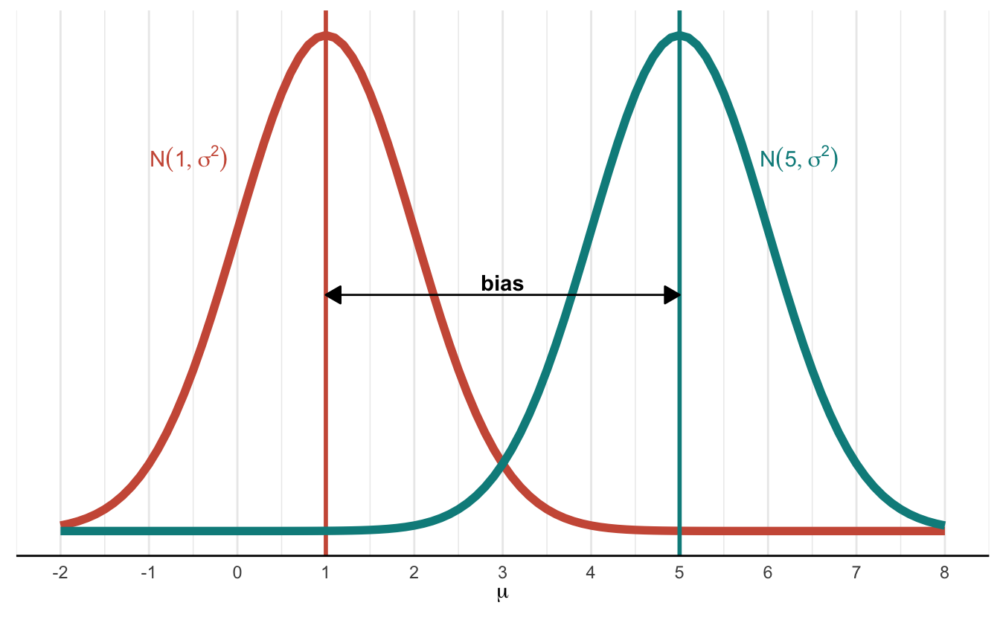

The Bias-Variance Tradeoff | Mathematical Statistics 2
Statistics
Mathematical Statistics
Author
Mitch Harrison
Loss
Last time, we noted that we cannot precisely calculate bias or variance since they are conditional on the parameter we are estimating in the first place. If we knew that value, we wouldn’t need an estimator. Ideally, our estimators would be as close as possible to the true value of our unknown parameter \(\theta\), but there may be infinitely many possible values for \(\theta\). Instead, we will seek to be close to a range of possible values of \(\theta\).
Definition
Closeness describes how much we are willing to “pay” to be some “distance” away from the true value of \(\theta\). We will measure this distance with a function (called a loss function), which is denoted as:
\[
\ell(\theta, a).
\] This notation is somewhat confusing, because we are now using \(a\) to denote our estimate instead of \(\hat{\theta}\). So you can think of it as \(\ell(\theta, \hat{\theta})\) if that is more helpful (as it is for me).
As an example, if we choose a loss function,
\[
\ell(\theta, \hat{\theta}) = (\theta - \hat{\theta})^2,
\] then we have arrived at the squared-error loss function. Observe that the difference between our guess and the true value is the error, and we are squaring that value. If we take the mean of that function, we arrive at a critical value in mathematical statistics that you may have heard of: the mean-squared error (MSE).
Definition
Risk is the expected loss for a given loss function \(\ell\). Mathematically, it is denoted as \[
R_{\delta}(\theta) = \mathbb{E}_{X|\theta}[\ell(\theta, \delta(\mathbf{X}))],
\] where \(\delta(\mathbf{X})\) is the function that gives us our estimator. In effect, the risk is the expected loss given some loss function \(\ell(\theta,\hat{\theta})\).
We will get back to loss next time.
The Bias-Variance Tradeoff
Worked example: bias
Let’s work on our first example problem to nail some things down. Let our data \(X_1, \cdots, X_n \sim N(\mu, \sigma^2)\), and let each data point be independent and identically distributed (iid). Like last time, \(\sigma^2\) is fixed and known. We are interested in estimating \(\mu\). Recall our two estimators from the previous article:
The expected value of \(\delta_2\) is 5. Let’s find the expected value of \(\delta_1\). Recall our generic formula for the expectation of an estimator is \(\mathbb{E}(\delta(\mathbf{X}) | \theta)\) for some estimator \(\delta\) and true value \(\theta\). In this case, our estimator is \(\overline{X}\) and our parameter is \(\mu\). Thus: \[
\begin{align*}
\mathbb{E}(\delta_1(\mathbf{X})|\theta) &= \mathbb{E}(\overline{X} | \mu) \\
&= \mathbb{E}\left[\frac{\sum_{i=1}^nX_i}{n}\right]
& \text{expanding out }\overline{X} \\
&= \frac{1}{n}\sum_{i=1}^n\mathbb{E}(X_i|\mu)
& \text{expectation can be distributed into sums} \\
&= \frac{1}{n}\sum_{i=1}^n\mu
& \text{because } \mathbb{E}(X_i) = \mu \text{ for any }i\\
&= \frac{n\mu}{n} \\
&= \mu
\end{align*}
\]
We have a bias of zero! That means that the expected value of our estimator is precisely equivalent to our unknown parameter. It feels like we have solved statistics, right? Well… no. But we will get to that in a moment. For now, let’s visualize bias.
Let’s say that the true (but unknown to us) value of \(\mu\) is 1. One of our estimators was the constant 5. If we let 5 be our guess for the mean, we are saying, “I think the distribution is centered on 5,” when in reality, it is centered on 1. That difference is shown below.
Click here for code
library(tidyverse)SIGMA <-1# this is our fixed and known standard deviationMU <-1# this is our true but unknown valueMU_HAT <-5# this is our estimatorggplot() +# plot the true distributionstat_function(fun = dnorm,args =list(mean = MU, sd = SIGMA),color ="coral3",linewidth =2 ) +geom_vline(xintercept = MU, color ="coral3", size =1) +annotate(geom ="text",hjust ="right",x =-.1,y = .3,label = latex2exp::TeX("$N(1, \\sigma^2)$"),color ="coral3" ) +# plot the estimated distributionstat_function(fun = dnorm,args =list(mean = MU_HAT, sd = SIGMA),color ="cyan4",linewidth =2 ) +geom_vline(xintercept = MU_HAT, color ="cyan4", size =1) +annotate(geom ="text",hjust ="right",x =6.8,y = .3,label = latex2exp::TeX("$N(5, \\sigma^2)$"),color ="cyan4" ) +# annotation arrowannotate(geom ="segment",x = MU,xend = MU_HAT,y = .19,yend = .19,arrow =arrow(length =unit(0.3, "cm"), ends ="both", type ="closed") ) +annotate(geom ="text",x =3,y =0.2,label ="bias",fontface ="bold" ) +# aesthetic fixestheme_minimal() +labs(x = latex2exp::TeX("\\mu")) +scale_x_continuous(limits =c(-2, 8), breaks =-3:8) +theme(axis.title.y =element_blank(),axis.line.y =element_blank(),axis.ticks.y =element_blank(),axis.text.y =element_blank(),panel.grid.major.y =element_blank(),panel.grid.minor.y =element_blank(),axis.line.x =element_line() )

As we can see, the smaller our bias, the closer our guess becomes to the true value of our parameter. We can also see that a bias of zero is ideal. But there is more to an estimator than bias. Let’s move on to variance.
Worked example: variance
Formally, the variance of an estimator is the expected value of the squared sampling deviations. But that explanation might not be conceptually helpful. So, let’s see an example.
Say a city has a population of 1,000,000. We want to get the average height of everyone in town. So we sample 1,000 people, measure their height, and use some function to calculate an estimator. We have used the same two estimators so far, \(\delta_1 = \overline{X}\) and \(\delta_2 = 5\), so we will continue with those.
Depending on the height of everyone in our 1,000-person sample, we will get a different \(\overline{X}\) each time we take a sample. If we take 100 samples of 1,000 people per sample, we will (probably) arrive at 100 distinct values of \(\overline{X}\). But if we use 5 as our estimator (perhaps to mean 5 feet tall), there will be no such variation in our estimator.
The measure of how much our estimator fluctuates as we take more and more samples is a helpful, intuitive understanding of variance. Ideally, we want to have as little variance as possible. We know our estimator has no variance if we use a constant (a number is always just that number), but what about \(\overline{X}\)? Let’s calculate.
\[
\begin{align*}
Var[\delta_1(\mathbf{X})|\mu] &= Var(\overline{X}) \\
&= Var\left[\frac{1}{n}\sum_{i=1}^nX_i\right]
& \text{expanding out } \overline{X} \\
&= \frac{1}{n^2}\sum_{i=1}^nVar(X_i)
& \text{must square constants when factoring out of variance} \\
&= \frac{1}{n^2}\sum_{i=1}^n\sigma^2
& Var(X_i) = \sigma^2 \text{ is fixed and known} \\
&= \frac{n\sigma^2}{n^2} \\
&= \frac{\sigma^2}{n}
\end{align*}
\]
Notice that this value is a positive number, which means the variance of \(\delta_1 = \overline{X}\) is higher than the variance of \(\delta_2 = 5\), which is zero.
The Tradeoff
This phenomenon, where one estimator has better bias and the other has better variance, is an example of a central balancing act that statisticians have to perform: the bias-variance tradeoff. We have seen an estimator with no bias but positive variance (\(\overline{X}\)) and another with no variance but non-zero bias (5). How do we know which is better? We will explore that question in the following article when we explore this tradeoff more deeply.
Conclusion
We are making steady progress, but we have much learning ahead! If you have any questions or suggestions, you can always pop into my Discord server and ask me directly. If you find any value in this work and want to support me financially, you can buy me a coffee. Thank you for reading, and see you next time!